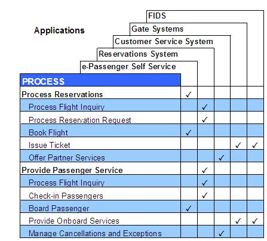

| Artifact: Process Education (BUS 403) |
 |
|
The Process Education Work Product focuses on developing learning materials needed to implement education-related support processes for targeted stakeholders to realize a planned future business solution. The delivery of educational materials occurs throughout the implementation of the project. The purpose of this work product is:
|
| Brief Outline |
The Business Process Education plan is typically documented in a set of structured text templates and documents which
are bundled into an education plan and training kit.
The notation should include the following formats and content: Business Process/Application Functionality Matrix
 Using a similar “matrixing” technique shown above, tie process enablers to system functionality (applications). Package/Technology Course Description & Schedule
A course is a complete series of related studies that satisfy the learning requirements for one competency. It is
backed up by courseware such as training kits, process documentation, and help materials for implementing the
course. Course Module Definitions Course modules are independent, reusable components used in conjunction with one another for building courses. Course module definitions briefly describe course modules by specifying the following information:
Course Ingredient Definitions These identify the following elements a course must address in order to transfer skills, knowledge, and behaviors to its learners:
Course Ingredient / Course Module Matrix
This identifies the ingredients for which each module is responsible and documents module scope by recording
involvement indicators in the intersecting cells. Course modules Course modules include the following components:
A Case Study is a complex exercise that is reality-based and offers practice using multiple skills, units of knowledge, and behaviors together. One or more sample solutions are included for learners to review. This work product expands as new courses are developed and existing ones are modified. The standards for developing case study material vary with the medium used-a Case Study might be paper-based, conversational, or human-machine interactive. |
|---|
| Templates | |
|---|---|
| Examples |
Many ingredients go into determining the approach and sequence for developing initial education and education materials. First, recognize that there is no such thing as the correct education plan. Your choice of learning options will vary with such factors as:
The learning options themselves are affected by each other and by the technologies chosen for use in the solution implementation. Some options may have a greater resource of education than others, such as product training and documentation. A comprehensive instructional program may reduce the need for reference material in general. Remember that there is more to learning than sitting through a regimen of prescribed courseware. Learning also involves informal education, such as coaching and mentoring. Instead of striving for a particular balance or number of course graduates, aim for getting targeted populations to behave competently in their assigned roles. Consider all ingredients together and make high-level trade-offs between them. Where possible, provide quantitative guidelines to aid decisions about the level of investment to be made in any category. For example, you may want to spend more on training for a process that will be used by one person 10,000 times a month than on one that will be used by 100 people 20 times a month. In addition, the following guidance is recommended:
|
| Impact of not having | Without a proper understanding of the business process enablers and the technologies planned for use in the solution implementation, it will be difficult for the Client's team members to participate in the development of the future design of the business processes and the application (package/asset/custom). This education helps the project team understand the opportunities and limitations of the planned technologies and business process enablers (people/technology). As the solution implementation progresses, it may be difficult for Client’s team members to understand to what extent the future design fulfills the required capabilities and performance as well as the impacts on the roles and skills required to operate with the new business solution. |
|---|---|
| Reasons for not needing |
|
| Guidelines | |
|---|---|
| Estimation Considerations |
| © Copyright IBM Corp. 1987, 2012 All Rights Reserved Property of IBM These materials are intended only for use as part of an IBM engagement |